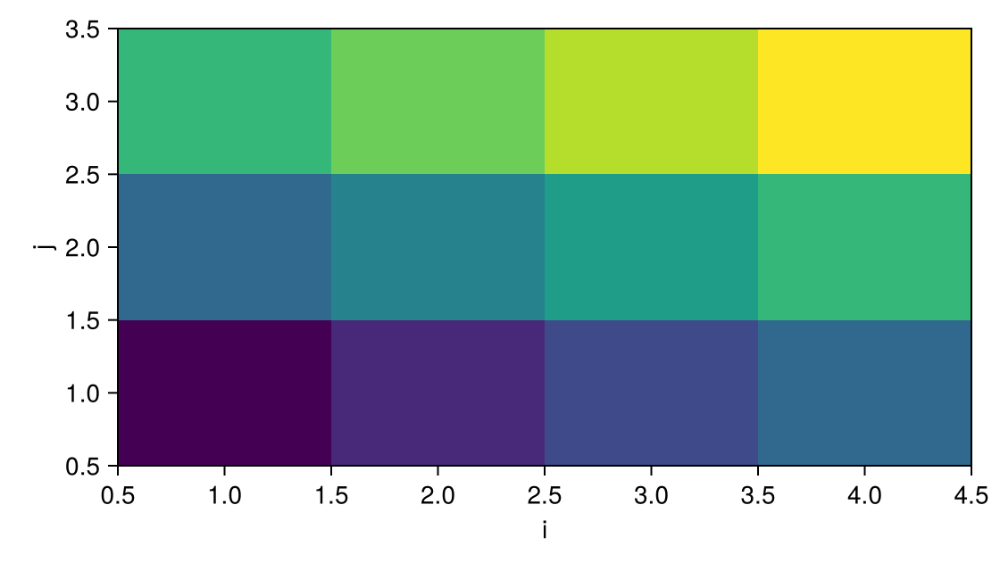
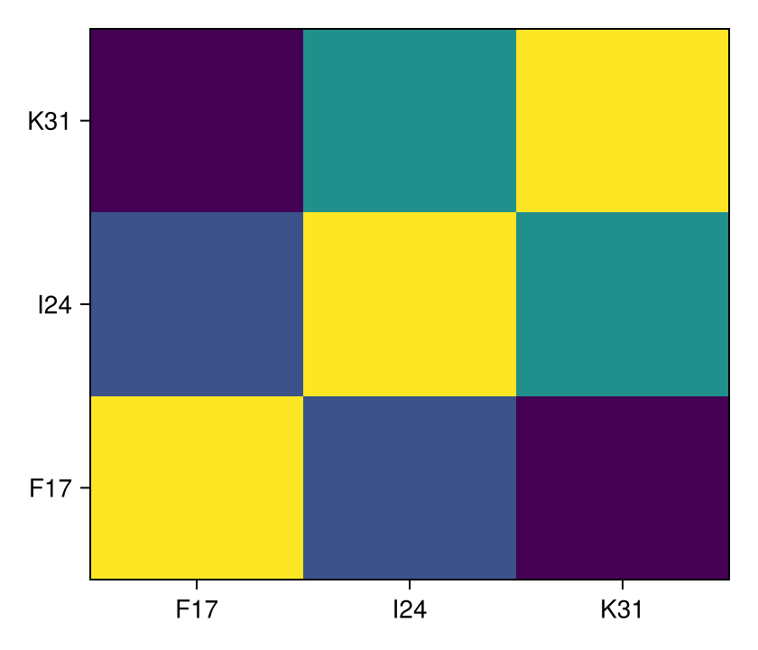
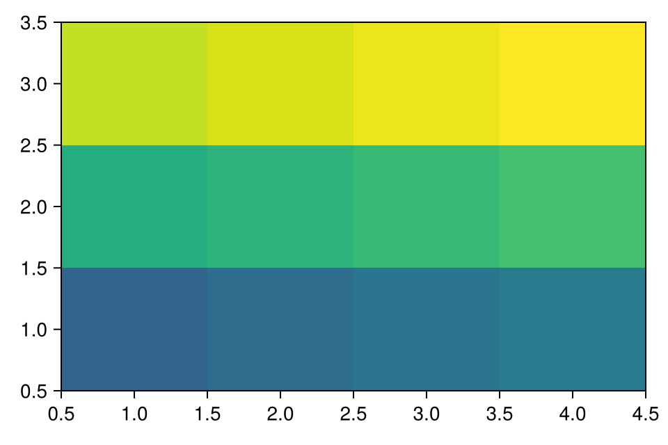

Heatmaps and images
Hover a heatmap or image cell and the tooltip reads (i,j) = value. Click it and your notebook gets the cell's indices and value.
Notebook as text
Click a cell, and the last cell shows its indices and value.
begin
z = [
4.0 7.0 10.0
5.0 8.0 11.0
6.0 9.0 12.0
7.0 10.0 13.0
]
fig = Figure(size = (560, 320))
ax = Axis(fig[1, 1]; xlabel = "i", ylabel = "j")
p = heatmap!(ax, 1:4, 1:3, z)
nothing
end@bind pick masque(fig; bind = p)
if isnothing(pick)
"click a cell"
else
"z[$(pick.i), $(pick.j)] = $(pick.value)"
endclick a cellHover and click cells
masque(fig) makes every heatmap! and image! interactive. Each grid gets its own field in the @bind value, sel.cells for the first and sel.cells_2 for the second, and its events report that name as pick.layer. To give a grid a name of your own, for example when a figure has two grids, pass the plot to interactables with an id:
@bind sel masque(fig, interactables(p; id = :temps))A click makes sel.temps a GridCellEvent. With pick = sel.temps, or with bind = p as in the example above, which makes the value the cell itself, pick.i is the cell's first index in the matrix you plotted and pick.j its second, so z[pick] is the same as z[pick.i, pick.j]. Makie draws the first index along x and the second along y. pick.value is the cell's value, and the clicked cell stays highlighted.
Select several cells
A heatmap or image built with select = :many lets the reader pick any set of cells, and its field holds every selected cell at once:
hm = heatmap!(ax, img)
@bind sel masque(fig, (region = interactables(hm; select = :many),))sel.region is a GridSelection, empty to start. A click on a cell adds it to the selection and a click on a selected cell takes it out, so the selection grows one click at a time; a click off the image keeps it, Escape clears it, and a box adds every cell it touches, as Select several marks shows. img[sel.region] gives the values of the selected cells, findall(sel.region) their positions in img, and sel.region.mask a matrix the size of img that is true where a cell is selected, so a selection of any shape is one value to index with.
To start with cells already selected, such as a selection you saved earlier, pass selected a matrix the size of img that is true at those cells:
@bind sel masque(fig, (region = interactables(hm; select = :many),);
selected = (region = saved_mask,))The cells start highlighted, sel.region holds them before anyone clicks, and a click takes one out like any other. selected also takes a GridSelection or the positions findall gives, and a matrix of a different size from img raises an ArgumentError.
Select whole regions
When the cells of an image stand for larger things, such as the objects of a segmentation or the small patches an image is cut into, pass regions: a matrix of whole numbers the size of img that gives each cell the id of its region. Cells that share an id then act as one. Hovering outlines the whole region, and a click picks all of it:
labels = label_components(mask) # ImageMorphology: 0 for the background, 1, 2, … for the objects
@bind sel masque(fig, (objects = interactables(hm; select = :many, regions = labels),))A click adds a region or takes it out, and a box adds every region it touches. sel.objects is the same GridSelection as before, so sel.objects.mask is every selected cell, and sel.objects.regions lists the ids of the regions it holds whole. A cell whose id is 0 belongs to no region and is picked on its own, so the background stays as fine-grained as before.
Many small regions on a large image make the figure slower to load. Crop to the part being edited before cutting it into patches.
On a grid that picks one cell, regions turns a click into a pick of the object under the pointer: the click's GridCellEvent carries region, the clicked object's id, and the whole object stays highlighted. The tooltip names the region, and a masque"…" template can use $(region).
Show your own data for each cell
To show your own data for each cell, such as the names along each side of a contact map or correlation matrix, pass payloads: a function of the cell's i and j, or a matrix the same size as the one you plotted. The tooltip then lists the payload's fields and the cell's value, and a template can use them next to i, j, and value:
Notebook as text
Hover a cell to see the two names and the value, or click it.
begin
contacts = [1.0 0.31 0.08; 0.31 1.0 0.54; 0.08 0.54 1.0]
fig = Figure(size = (420, 360))
names = ["F17", "I24", "K31"]
ax = Axis(fig[1, 1]; xticks = (1:3, names), yticks = (1:3, names))
p = heatmap!(ax, 1:3, 1:3, contacts)
labeled = interactables(
p;
payloads = (i, j) -> (; x = names[i], y = names[j]),
tooltip = masque"($(x), $(y)) = $(value)",
)
nothing
end@bind pick masque(fig, labeled; bind = p)
isnothing(pick) ? "click a cell" : "$(pick.x) and $(pick.y): $(pick.value)"click a cellName the fields after the axes, because i runs along x and j along y. Hovering a cell reads (F17, I24) = 0.31. A click puts the cell's payload in pick, so pick.x and pick.y read it directly, as pick.i and pick.j do.
Every cell's payload is sent with the figure, even on a large image, where the grid otherwise sends only enough values to fill the screen. A short label on every cell of a 200 × 200 heatmap makes the figure several times larger, and a 1000 × 1000 image runs to tens of megabytes. On a big grid, keep the data in Julia and look it up with pick, as in names[pick.i].
Make a grid from edges and values
If you have edges and values instead of a plot, pass the x edges, the y edges and the values to GridInteractable. Each edge vector must be monotonic, either ascending or descending, and the values form a matrix of size (length(xedges) - 1, length(yedges) - 1):
Notebook as text
Hover a cell to read its value, or click it.
begin
z = [i + 10j for i in 1:4, j in 1:3]
fig = Figure(size = (480, 320))
ax = Axis(fig[1, 1])
image!(ax, 0.5 .. 4.5, 0.5 .. 3.5, get(cgrad(:viridis), z ./ maximum(z)); interpolate = false)
nothing
endcells = GridInteractable(ax, 0.5:1:4.5, 0.5:1:3.5, z; id = :cells);@bind pick masque(fig, cells; bind = cells)
isnothing(pick) ? "click a cell" : "cell ($(pick.i), $(pick.j)) = $(pick.value)"click a cellLarge grids
A 4000 × 4000 heatmap works without any setting. When its cells are smaller than a screen pixel, hovering shows the cell under the pointer and its value, and a click still reports the cell's true i and j.
A color image has no single value per cell, so hovering or clicking it reports i and j with value = nothing, at any size. To read a number instead, pass a GridInteractable with a grid of the values you want, such as each pixel's intensity, and give it the image's layer id, such as id = :cells, so it takes the image's place.
Brush a block of cells
To select a block of cells by dragging a box over them, pass an ROIInteractable to masque, with selects naming the heatmap or image you plotted:
box = ROIInteractable(ax; bounds = (1.0, 3.0, 1.0, 2.0), selects = p)
@bind win masque(fig, box; bind = p)The box fills the heatmap's value, so with bind = p, win is a GridWindowEvent for the block of cells under the box. It starts with the block under bounds, and each release replaces it with the block under the box then. win.i1:win.i2 is the range of the matrix's first index, drawn along x, and win.j1:win.j2 the range of its second index, drawn along y, so z[win] is z[win.i1:win.i2, win.j1:win.j2], that block of the matrix.
A box that misses the grid still gives a GridWindowEvent, with empty ranges (win.i1:win.i2 is 1:0), so z[win] is an empty matrix rather than an error.
While the box selects the grid, clicking a cell shows its tooltip but does not change win, which stays the box's block.
Where to go next
- Read coordinates: read values from the colorbar next to a heatmap
- Supported plots and axes: which axes a heatmap works on
- Keyboard and screen readers: what the keyboard reaches